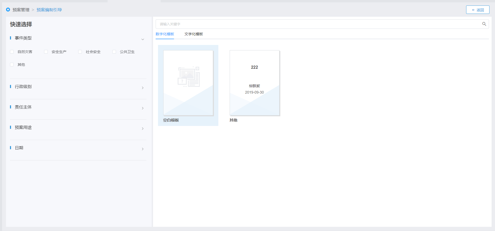

| 1. | 在“预案列表”页面，单击右上方〖新建预案〗按钮，进入预案编制引导页面。 用户也可以直接单击菜单项“预案管理→预案编制引导”，进入预案编制引导页面。如Fig 14所示。
Fig 14 预案编制引导

|
| 2. | 预案模板检索。 在页面左侧选择条件筛选项，或在右侧搜索输入框输入预案名称关键字，可快速查找到符合筛选条件的模板记录。
若检索到有所需类型的模板，用户可以基于已有模板进行预案编制操作；若未检索到所需类型的模板，则选择空白模板进行创建。
|
| 3. | 选择预案模板。 在模板选择区“数字化模板”页签下，双击需要的模板，显示数字化预案编制页面。
|
| 4. | 填写预案信息。包括：基础信息设置、预案内容设置、其他信息等。
|
| 5. | 若选择的模板为空白模板，则需要从无到有添加文档目录。具体参见 添加文档目录。 |
| 6. | 在文档目录区域中选中一目录，对应该目录的文档结构内容区域变为可编辑状态。若当前选中目录对应的文档结构内容区域无数据，编辑文档结构内容区域。具体请参见 添加文档结构内容。 |
| 7. | 确认无误后，单击〖确认提交〗按钮。 |